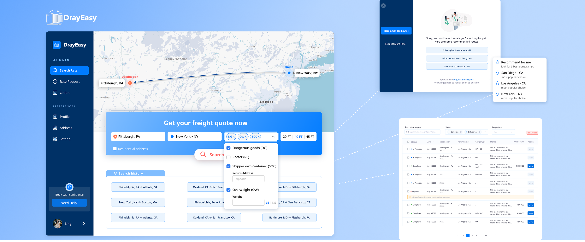
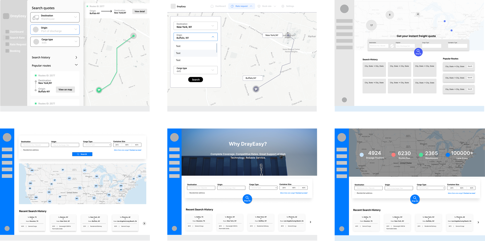
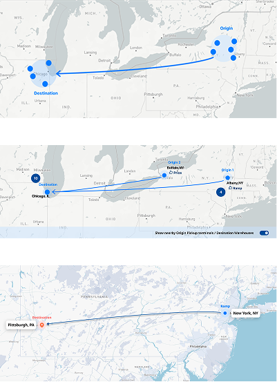

Simplifying Rate Search for Freight Forwarders
Redesign DrayEasy's rate-search flow around real drayage workflow, reducing friction across common and edge-case scenarios.
📌 Problem Overview
DrayEasy had a strong rate database, but a difficult search experience.
- Workflow didn't match real user scenario
- Too many branches made tasks harder
- Weak support for edge cases

Key Workflow Improvements
1. Make repeat actions easier to access
Problem:
Users often returned to familiar routes, but search history was hidden.

Solution:
Enable one-click reuse by surfacing recent searches directly on the main page.
2. Turn dead ends into alternatives

Problem:
Users could hit "no results" even when nearby routes were still viable.

Solution:
Offer viable alternatives by recommending nearby routes before manual support to reduce dead ends.
3. Catch mismatched scenarios earlier

Problem:
Users could get an unusable rate, forcing another search or a support request.

Solution:
Avoid irrelevant rates by surfacing key cargo constraints earlier in the search flow.
Before Redesign
Understand how users actually get a quote
I combined expert interviews, competitive analysis, and journey mapping to learn how freight forwarders searched, compared, and moved a quote forward.

Remove choices that didn't help users move forward
I restructured the flow around what users actually needed to do: search, compare, book, save, or get support when needed.

Before
Too many branches made the flow harder to follow, even when several paths still led to manual support.

After
A more streamlined flow focused on the actions users actually needed to move a quote forward.
Design Process at a Glance
Exploring layouts
We compared multiple layouts before choosing a top-to-bottom structure that kept key information together and reduced competition with the map.

Refining interactions
We iterated on search inputs, recommendations, cargo constraints, and map behavior to balance clarity, density, and discoverability.
Search input iterations

Map iterations

Cargo type iterations

Cleaning up rate request flow
We also cleaned up the rate request view to better fit the new workflow, with clearer status, filters, and actions.

Before

After
From Prototype to Production
🔎 Usability testing
Tested the mid-fi prototype with 2 customers and the PM, then refined a few last-mile issues before delivery.

Build a reusable design system
We created shared components, typography, colors, and logistics icons, reviewing key patterns with engineering to keep them consistent and feasible to build.

Shipped in 2023, still live in 2026
The redesign launched in 2023 and is still live today. Since then, the product has added new rate categories, expanded search options, and more features while keeping the core search structure.
What This Project Changed for Me
Complex workflows shouldn't feel complex just because the system behind them is. My job is to understand the complexity first, then simplify what users actually need to see and do.